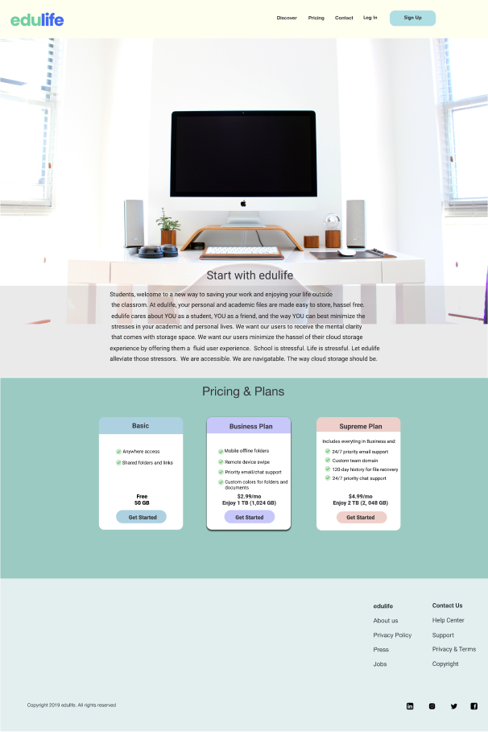

edulife

A cloud storage platform for the everyday student
UX Research | Branding | UI Design | Prototype
PROBLEM
With an ever increasing competitive cloud storage platform market, a new competitor with innovative features still offers the potential for advantageous competition in the marketplace. How can I prove a new way for students to organize their personal and academic files without the added stress of user directed organization?
SOLUTION
edulife, a cloud platform built for students, allows users, to organize, upload, create, and share their content while keeping personal and academic files organized separately, maintaining a true work-life balance.
ROLES
- UX/UI Design
- User Research
- Visual Deisgn
- Branding & Identity
TOOLS
- Figma
- Invision
- Draw.io
- Usability Hub
DELIVERABLES
- User Surveys | Personas
- Competitive Analysis
- Moodboard | User stories
- User flows | Wireframes
- Style Guide | Digital Prototype
RESEARCH & DISCOVERY
User Research
I surveyed 20 users about their experiences with current cloud storage applications.
Key Findings

Pain Points: current cloud storage application make it difficult to organize files, folders, and photos. 75% cite uploading files and file organization as the most important features when using storage apps. Frequency: Google Drive: 100% Dropbox: 60%, iCloud 45%
Competitive Analysis


While leading cloud storage competitors such as Google Drive and Dropbox offer simplicity of use and multi-platform features, dashboards can be difficult to manage with limited file sorting options and need for secure internet connection. Pinterest, an excellent platform for organization, storage of interests, and networking, lacks document sharing.
Full AnalysisStrategy
The cloud storage platform needed to be geared towards busy people - students who enjoy balancing hobbies outside academia. What if there was a cloud storage platform that preorganized files and folders for its users to minimize the frustration of self cloud organization?
Personas and User Stories
Personas

Jared is a 45 year old High School Media Arts Teacher in Boston, MA. On a given weekend, he is either editing student podcasts or filming independently at Boston Common. Much of his professional of videography overlaps with my hobbies. Sometimes his personal video files wind up in my curriculum files and the process of self organization without Google Drive’s help is often frustrating. He wants a platform that can minimize the stress.

Charlotte is a 24 year old law school student in her second year at the Brooklyn Law School. She is passionate about food, CrossFit, meal prepping, and public speaking. She loves maintaining a healthy lifestyle, bookmarking recipes, and workout tips to my DropBox while maintaining the organization of my law school semester notes. Especially during exams, it gets increasingly difficult for Charlotte to maintain storage of both lifestyles. She wants the three to coexist on her cloud in a way that does not further heighten her stress levels.”
{kind=link}
User Stories
With the MVP (minimum viable product) in mind, I listed all tasks a user may want to do when using our product.
High priority tasks:
- • Sign up
- • Log in
- • Upload files
- • Share content
- • Move content
- • Create content
INFORMATION ARCHITECTURE
User Flows & Site Maps
I sketched and created digital user flows that related to the high priority user tasksto create user flows and a site map frame the users’ navigation:

LO-FI WIREFRAMES
Based on the highest priority user stories, users flows were developed to show the navigational structure and foundational framework beginning the wireframing sketches.
 Full Lo-Fi Wireframes
Full Lo-Fi Wireframes
BRANDING & IDENTITY
Moodboard
A moodboard was created to generate a color scheme to give the edulife brand a soft and minimalist feel.
Logo Design
The “edulife” name combines both education and life, signifying that the brand allows the academic and personal lifestyles to coexist in the same cloud through minimizing the stress of self organization.

STYLE GUIDE
Typography
Roboto and Poppins, geometric sans serif typefaces were chosen for monolinear letterforms and open curves.


Color Palette
A bold and pastel color palette was chosen to convey the boldness and simplicity that edulife guarantees to all users.
 View Style Guide
View Style Guide
User Testing & Iterations
Initial Designs
I conducted two rounds of moderated usability testing for the low-fidelity and high-fidelity prototypes and brand logotype and user dashboards.


Updates:
Upon conclusion of the tests: the following changes were made to the edulife brand
- • Refine onboarding/log in processes
- • Shrink icon pixel size
- • Minimize promixity of CTA buttons
- • Make breadcrumb trails and dashboard icons clickable
- • Lower font size of logotype
- • Took logotype off ivory background and replaced with royal blue
THE FINAL PROTOTYPE: BRINGING IT ALL TOGETHER
To meet web accessability guidelines, ivory and viole were eliminated and replaced with a royal blue, aligning with an edulife core value: sophistictaion. CTA buttons did not create a sense of unity for users. Call to action buttons were enlarged with added coloring while user dashboard presents a navigable page for the user to “Upload” or “Create.” Onboarding pages did promote log in or sign up proccesses to users by having the menu on the left hand side of the page. The call to action buttons “Sign in here” and “Join edulife” were overlooked during usability tests with users citing difficulty during onboarding processes.


FUTURE CONSIDERATIONS
In its current state, edulife is a minimally viable procuct. If the project were to be continued I would implement the following: